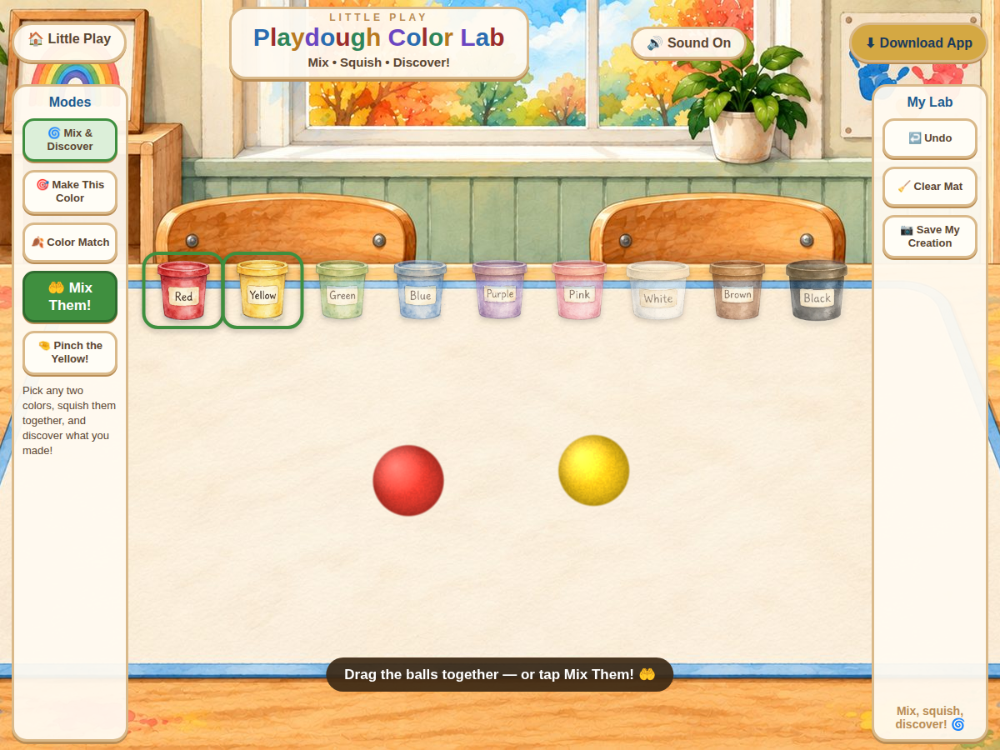

Little Play
Playdough Color Lab
Explore digital playdough color mixing through free discovery and color challenges.
$2.99
Ways to use it
- Predict and observe color mixtures.
- Compare a mixed color with a target.
How to play
- Choose Mix & Discover, Make This Color or Color Match.
- Pick two colors and use the mixing controls.
- Try another combination or clear the mat.
Practical details
The lab includes undo and Save My Creation controls.
Explore together
Invite children to explain what they notice and talk through their choices.